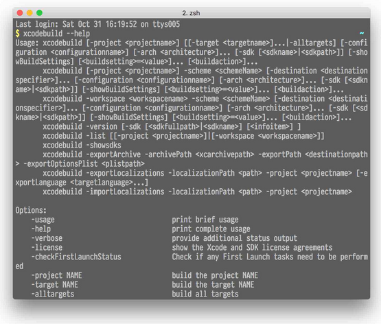
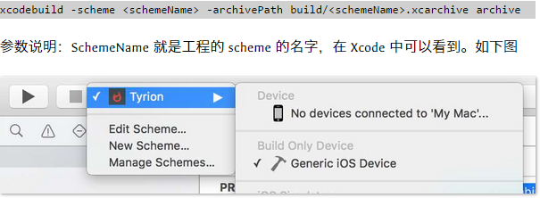
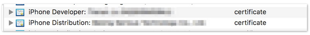
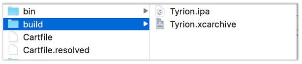

作者：@webfrogs
CI 也就是持续集成，是一种软件开发实践。通过自动化构建来将软件系统集成后尽早交付测试来发现问题。
在 iOS 开发中，如果需要把工程打包成 ipa 文件，通常的做法就是在 Xcode 里点击 「Product -> Archive」，等待整个工程 archive 后，然后在自动弹出的 「Organizer」 中进行选择，根据需要导出 ad hoc，enterprise 类型的 ipa 包。虽然 Xcode 通过提供的 GUI 操作已经屏蔽了大部分的细节，但作为一个偷懒的程序员，当然只是想简单的执行一个命令，然后坐下来惬意地喝一杯茶，静静等待整个过程的完成。那 xcodebuild 这个命令就是来完成这个事情的。
目前已经有不少封装得很不错的第三方打包服务可以用，比如最出名的有 AFNetworking 的作者 mattt 大大的 shenzhen （没错，就是深圳），还有一个名叫 gym 也很不错。这些库都是对 xcodebuild 这个命令做了一些封装，更方便使用而已。
xcodebuild 使用方法
xcodebuild 命令是 Xcode Command Line Tools 的一部分。通过调用这个命令，可以完成 iOS 工程的编译，打包和签名过程。这个命令随着 Xcode 的版本不同使用方法上也会有所不同。打开命令行，调用以下命令查看使用方法
xcodebuild --help
虽然这个命令屏蔽了大量编译器的细节，实际使用起来还是较为繁琐，使用的话最好还是对其做一层封装，来更方便地使用，这个之后的文章里再细说。

上面截图中显示了命令执行结果。当前环境是目前最新的 Xcode 7.1。
Archive 工程
我们就根据显示的帮助信息来调用命令完成整个打包的过程吧。首先需要了解的是，archive 工程后，实际上我们是把整个工程编译，然后签名，变成了一个后缀名为 xcarchive 的文件。通过调用以下命令，我们将整个工程编译，签名，然后将生成的 xcarchive 文件放到工程根路径下的 build 文件夹里。
xcodebuild -scheme -archivePath build/.xcarchive archive
参数说明：SchemeName 就是工程的 scheme 的名字，在 Xcode 中可以看到。如下图

如果工程使用了 Cocoapods 来管理第三方库，那么命令的执行方式上有所不同，因为 Cocoapods 会把工程变成一个 workspace。将 workspace 工程 archive 的命令如下。
xcodebuild -workspace -scheme -archivePath build/.xcarchive archive
这个命令和上面的命令区别就在于需要指定 workspace 的文件名。
上面这两个命令适用于不同类型的工程： workspace 或者非 workspace。执行中读取的配置都是在工程的 Target 或者 Scheme 中设置好的配置。比如，archive 进行编译的是 release 环境，这个在工程的 scheme 中可以看到。而签名的证书默认也是在各个 Target 的 Build Setting 中的配置。
命令中可以添加一些参数实现在命令执行时配置不同的环境。比如，如果想 archive 出 Debug 环境的包，那么就可以在命令中添加 -configuration Debug 参数。对于非 workspace 的工程，还可以通过添加 PROVISIONING_PROFILE=
注意：如果下一步中需要导出的是 enterprise 类型的 ipa 包，则导出过程中使用的 profile 文件中指定的 identifier 一定要和相应的 target 的 Bundle Identifier 完全一样，不能使用包含通配符 * 的 profile
小提示：如果 archive 命令无法执行成功, 则可以在 Xcode 中通过点击「Product -> Archive」来查看产生问题的原因。如果 Xcode 中操作没有问题，那么 archive 命令也是可以正确执行的。
导出 IPA
接下来就是将上一步生成的 xcarchive 文件导出，生成 ipa 文件。这里需要用到的命令是 xcodebuild -exportArchive。
从上面的帮助文件中可以看到命令的使用方法。这里需要注意的是，目前的 Xcode 7 中此命令的使用已经变成使用 -exportOptionsPlist 的参数形式了。这种形式支持 bitcode 的功能。但在实际的使用中，我发现使用这种形式我们工程并不能正确导出 ipa 包。原因我暂未找到，关于 xcodebuild 的资料也真是少的可怜。我猜测是我们工程未使用 bitcode 导致。所以我改为使用了 Xcode 6 时代的 -exportFormat IPA 参数来完成导出 ipa 包的功能。
xcodebuild -exportArchive -exportFormat IPA -archivePath -exportPath
参数说明：archivePath 就是上一步生成的 xcarchive 文件的路径。exportPath 就是导出的 ipa 文件路径。
如果导出的 ipa 中要更换 profile 文件，也就是需要修改上一步中 archive 文件用于签名的 profile 文件，有两种方式可以完成这个任务。
一种方式是直接指定新的 profile 文件，用法是添加参数 -exportProvisioningProfile
如果工程中有多于一个的 tagert， 比如提供了 watchkit 的功能。由于 watchkit 和 watchkitextension 的 target 也分别需要不同的 profile，需要使用第二种形式的参数, -exportSigningIdentity

实例
以一个实际工程举例，该工程的名字叫 Tyrion。Scheme 名字也是 Tyrion。 那么 archive 的命令如下
xcodebuild -scheme Tyrion -archivePath build/Tyrion.xcarchive archive
导出 ipa 包的命令如下
xcodebuild -exportArchive -exportFormat IPA -archivePath build/Tyrion.xcarchive -exportPath build/Tyrion.ipa
依次执行完这两个命令后，工程根路径下的 build 文件夹内容如下图。

后续
导出 ipa 包后，就可以利用 iFunBox 之类的软件直接安装到对应的 iPhone ，或者利用 items-service 协议来远程安装。
就整个 CI 环境搭建来说，能够通过命令行正确导出 ipa 包只是完成了第一步，要完成整个自动化构建，还需要能够自动将 ipa 包发布出去。这篇文章就到此为止啦~~